WPU StreamFest 2026 adalah festival musik selama tiga hari yang
menghadirkan berbagai musisi Indonesia dalam satu rangkaian acara yang
penuh energi, hiburan, dan pengalaman seru bagi para pengunjung.
Festival ini mengusung tema “Neon Nights” yang menggambarkan suasana
malam dengan nuansa modern, penuh cahaya, warna, dan semangat anak
muda. Acara ini ditujukan khususnya untuk generasi muda dan Gen Z yang
ingin menikmati pertunjukan musik secara langsung, berkumpul bersama
teman, serta merasakan suasana festival yang berbeda dari kegiatan
hiburan biasa. Selain menikmati musik, pengunjung juga dapat merasakan
pengalaman festival yang lebih interaktif melalui berbagai area
hiburan, spot foto, zona santai, serta aktivitas menarik yang tersedia
selama acara berlangsung. Dengan konsep yang modern dan energik, WPU
StreamFest 2026 diharapkan menjadi tempat berkumpulnya para pecinta
musik dari berbagai daerah.
Selain menyajikan penampilan dari para musisi, WPU StreamFest 2026
juga dirancang untuk memberikan pengalaman yang nyaman, praktis, aman,
dan lebih ramah lingkungan bagi seluruh pengunjung. Festival ini
menerapkan konsep eco-friendly melalui pengurangan penggunaan sampah
sekali pakai, penyediaan tempat sampah yang terpisah, serta mengajak
pengunjung untuk lebih peduli terhadap kebersihan lingkungan selama
acara berlangsung. Sistem cashless payment juga digunakan untuk
mempermudah proses transaksi makanan, minuman, merchandise, dan
kebutuhan lainnya di area festival sehingga transaksi dapat dilakukan
dengan lebih cepat dan praktis. Dengan perpaduan antara musik,
teknologi, suasana modern, konsep ramah lingkungan, serta berbagai
fasilitas yang mendukung kenyamanan pengunjung, WPU StreamFest 2026
diharapkan menjadi festival yang tidak hanya menghibur tetapi juga
memberikan pengalaman yang berkesan, menyenangkan, dan sulit dilupakan
bagi setiap orang yang hadir.
Artist Lineup
Hindia
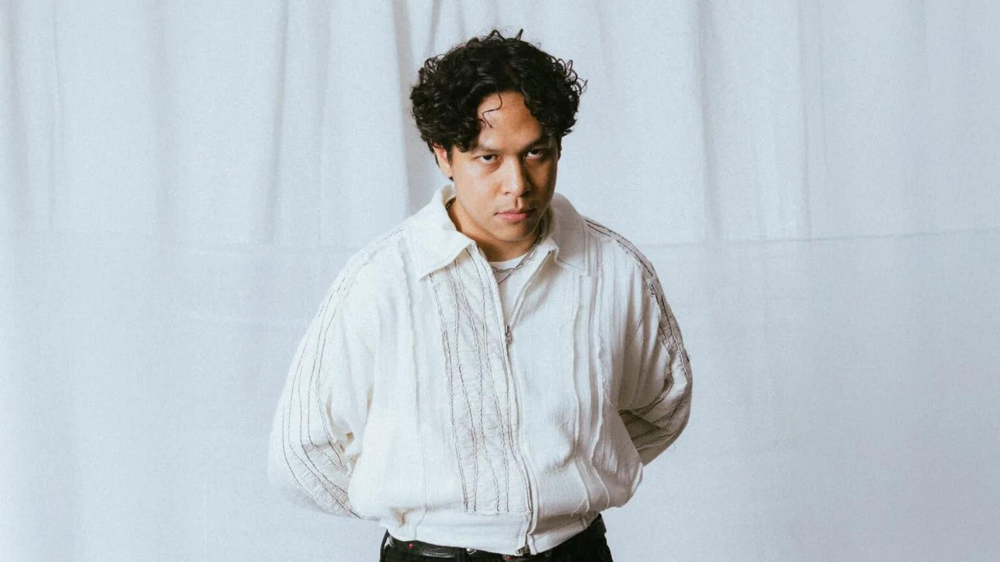
Hindia performing at WPU StreamFest 2026
Genre: Indie Pop
Performance: Day 1 — June 15, 2026
Deskripsi: Hindia is an Indonesian
singer-songwriter known for his reflective lyrics, emotional
storytelling, and distinctive indie pop sound.
Bernadya
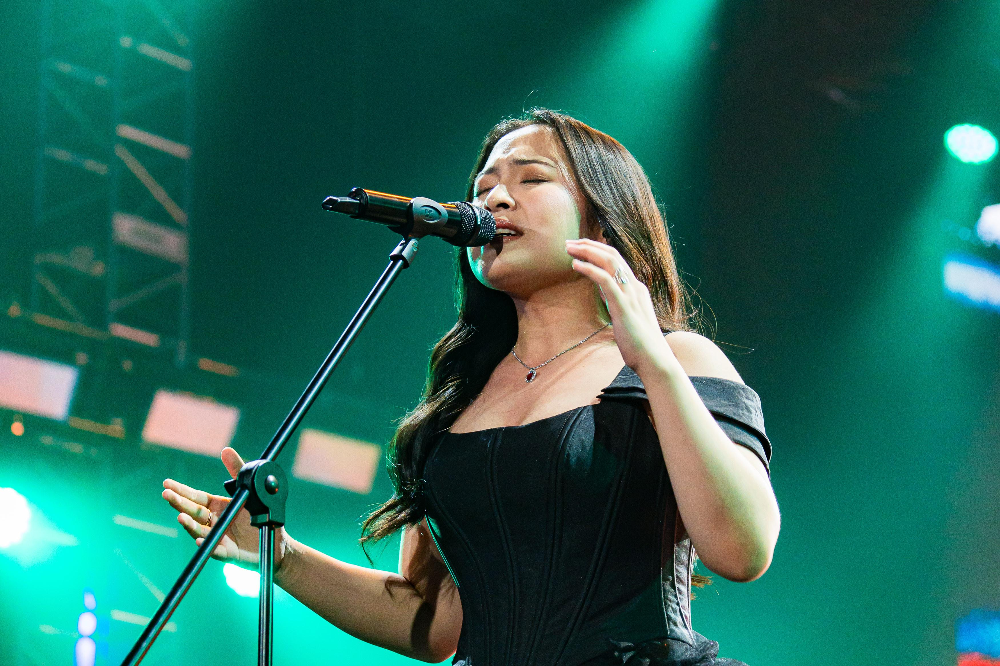
Bernadya brings heartfelt pop songs to the WPU StreamFest stage.
Genre: Pop
Performance: Day 1 — June 15, 2026
Deskripsi: Bernadya is an Indonesian
singer-songwriter known for her emotional storytelling, heartfelt
lyrics, and distinctive pop sound that resonates with young
listeners.
Pamungkas
Pamungkas brings his signature pop sound to the WPU StreamFest
stage.
Genre: Pop
Performance: Day 2 — June 16, 2026
Deskripsi: Pamungkas is an Indonesian
singer-songwriter and musician known for his heartfelt lyrics,
soulful voice, and unique blend of pop and indie music.
Juicy Luicy
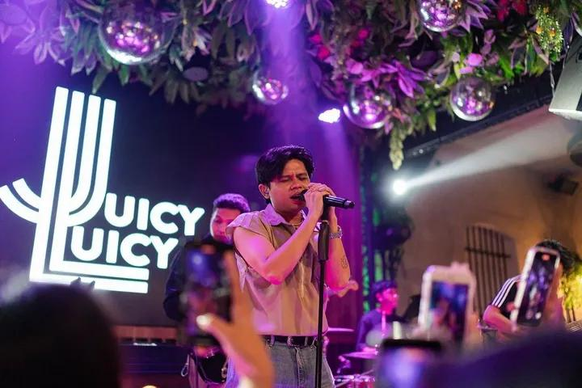
Juicy Luicy brings emotional pop songs and sentimental vibes to
the WPU StreamFest stage.
Genre: Pop
Performance: Day 2 — June 16, 2026
Deskripsi: Juicy Luicy is an Indonesian pop
band known for their emotional lyrics, sentimental melodies, and
relatable songs about love and heartbreak.
Nadin Amizah
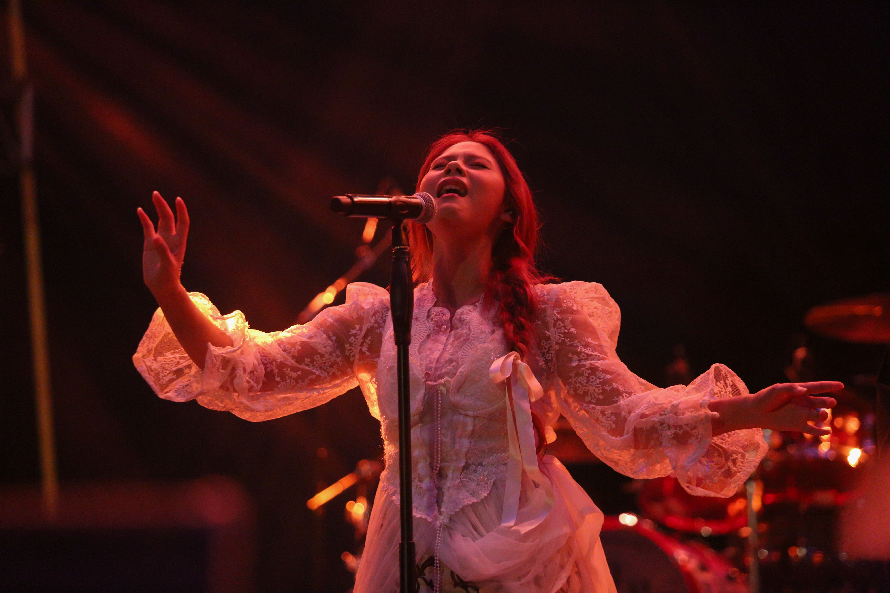
Nadin Amizah brings poetic lyrics and an intimate atmosphere to
the WPU StreamFest stage.
Genre: Pop
Performance: Day 3 — June 17, 2026
Deskripsi: Nadin Amizah is an Indonesian
singer-songwriter known for her poetic lyrics, emotional
storytelling, and distinctive vocal style that creates an intimate
connection with her listeners.
.Feast
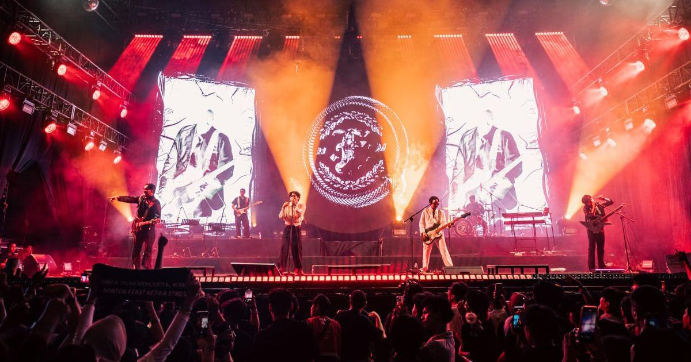
.Feast brings powerful rock energy to the WPU StreamFest stage.
Genre: Rock
Performance: Day 3 — June 17, 2026
Deskripsi: .Feast is an Indonesian rock band
known for their energetic performances, powerful sound, and
thought-provoking lyrics that often reflect social issues and
everyday life.
Festival Schedule
Time
Artist/Activity
Stage
Day 1 - June 15, 2026
15.00-16.00
Festival Gates Open & Welcome Session
Chill Zone
16.00-17.00
Bernadya
Side Stage
17.00-18.00
Break Time
18.00-19.00
Sunset Music Session
Chill Zone
19.00-20.30
Hindia
Main Stage
20.30-21.30
Neon Night Opening Party
Main Stage
Day 2 - June 16, 2026
15.00-16.00
Acoustic Session
Chill Zone
16.00-17.30
Juicy Luicy
Side Stage
17.30-18.30
Break Time
18.30-19.30
Festival Community Session
Chill Zone
19.30-21.00
Pamungkas
Main Stage
21.00-22.00
Neon Night Dance Party
Main Stage
Day 3 - June 17, 2026
15.00-16.00
Eco-Friendly Festival Talk
Side Stage
16.00-17.30
Nadin Amizah
Side Stage
17.30-18.30
Break Time
18.30-19.30
Sunset Chill Session
Chill Zone
19.30-21.00
.Feast
Main Stage
21.00-22.00
Closing Ceremony
Main Stage
Tickets
Festival Gallery
Lihat kembali berbagai momen tak terlupakan dari WPU StreamFest 2025,
mulai dari penampilan musik yang penuh energi hingga keseruan festival
yang dinikmati bersama ribuan pecinta musik.
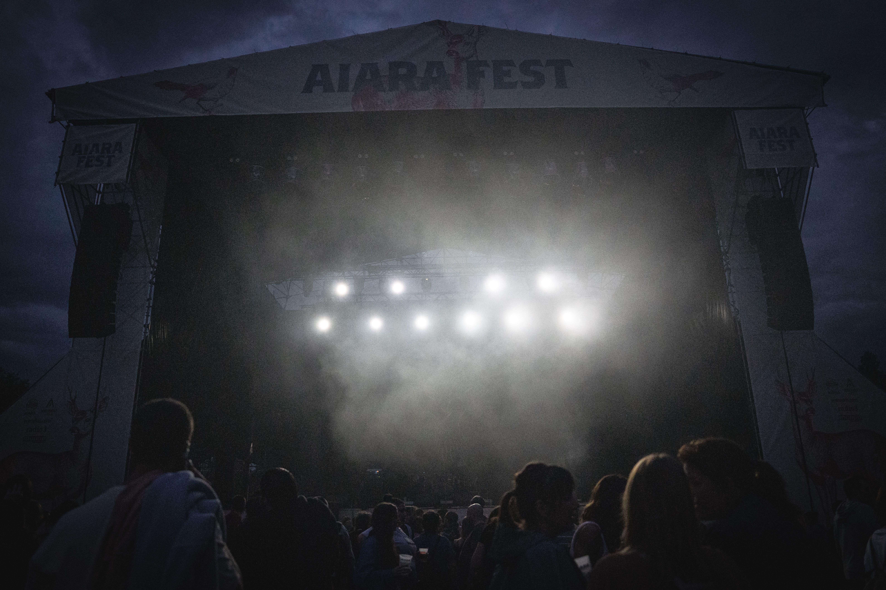
Panggung utama menyala dengan gemerlap cahaya di WPU StreamFest 2025.
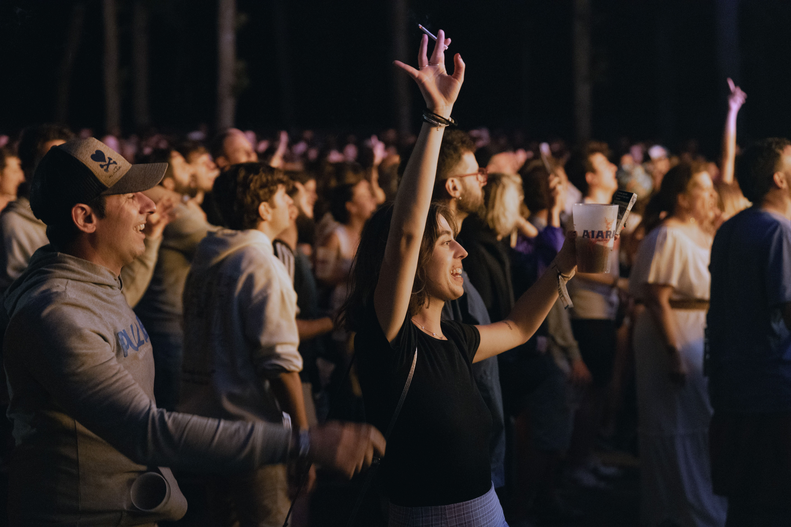
Ribuan pecinta musik menikmati suasana festival bersama di WPU StreamFest 2025.
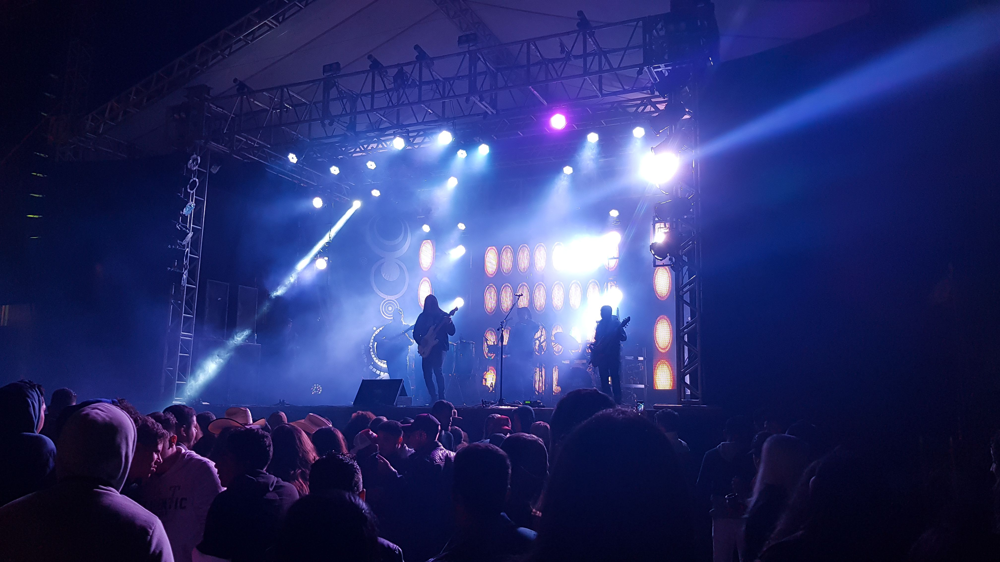
Penampilan musik yang penuh energi menjadi salah satu momen tak terlupakan di WPU StreamFest 2025.
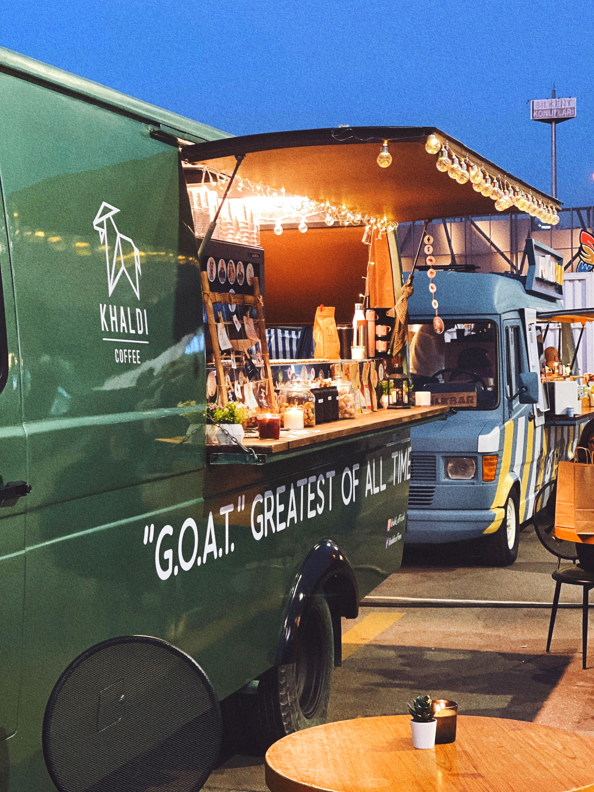
Para pengunjung menikmati berbagai makanan dan minuman di area festival.
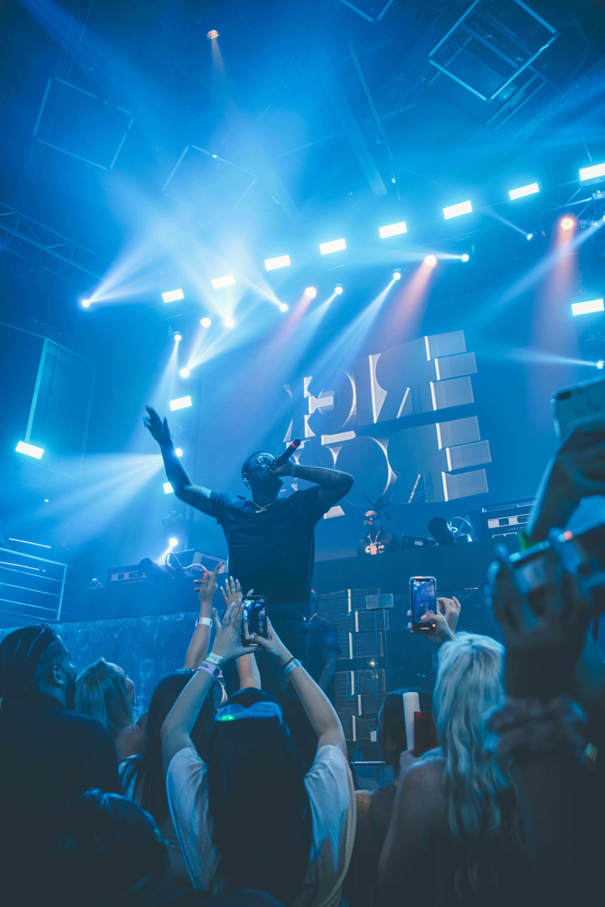
Pengunjung menikmati suasana festival dengan cahaya neon yang penuh warna.
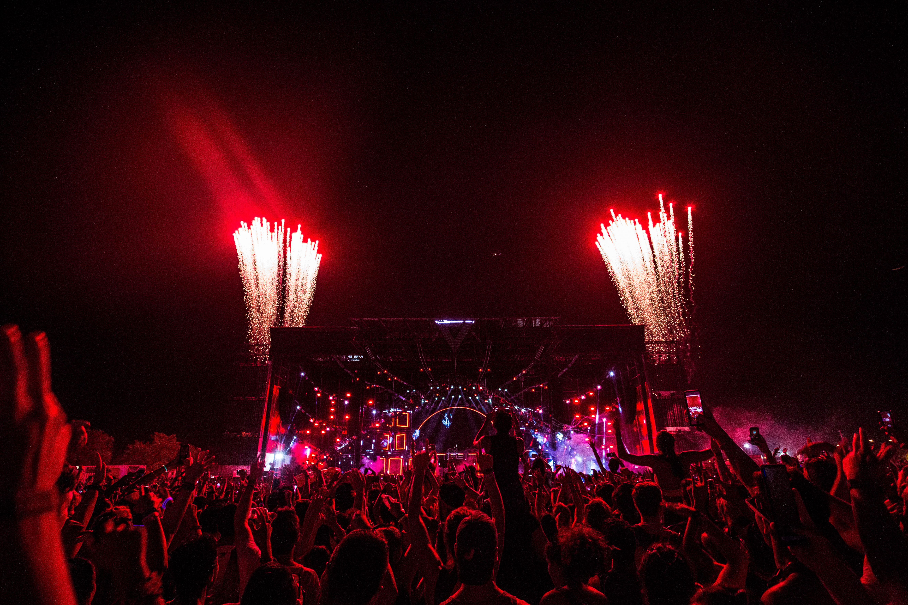
Malam penutupan dipenuhi cahaya, musik, dan momen berkesan yang sulit dilupakan.